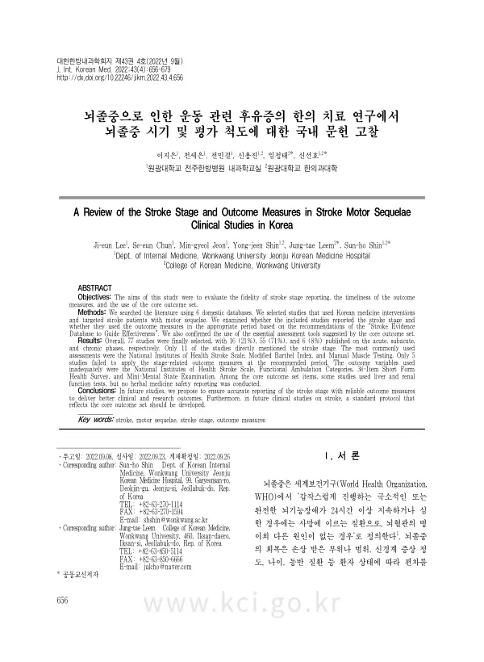

A Review of the Stroke Stage and Outcome Measures in Stroke Motor Sequelae Clinical Studies in Korea
Lee Je, Chun Se, Jeon Mg, Shin Yj, Leem Jt, Shin Sh
The Journal of Internal Korean Medicine 43(4):656-679

첫 장 · 오픈액세스First page · open access
논문 소개Summary
뇌졸중 후 회복은 시간에 매여 있습니다. 운동 증상은 첫 몇 주에 뚜렷하게 좋아지고 3개월까지 많은 회복이 이루어지며 6개월이 지나면 자연 회복 속도가 크게 떨어집니다. 그래서 발병 7일 이내를 급성기, 일주일부터 6개월까지를 아급성기, 6개월 이후를 만성기로 나눕니다. 평가척도도 이 시기를 따라갑니다. NIHSS는 발병 당시의 신경학적 결손을 재는 도구여서 만성기에는 타당도가 부족합니다.
이 고찰은 국내 한의 뇌졸중 임상연구가 시기를 얼마나 충실히 밝히는지, 그 시기에 맞는 척도를 쓰는지를 확인했습니다. 국내 여섯 개 데이터베이스를 2022년 7월 8일까지 검색해 3,885편을 모았고, 중복 2,525편을 뺀 1,360편에서 운동 관련 후유증이 있는 뇌졸중 초발 환자를 다룬 77편을 남겼습니다. 시기별 척도 권고는 미국물리치료협회의 stroke EDGE I과 II를, 핵심 지표는 뇌졸중 후유증 한의 핵심지표세트의 여덟 항목을 기준으로 삼았습니다.
77편 가운데 증례연구가 66편으로 86퍼센트였고 무작위 대조시험은 8편이었습니다. 대상자는 아급성기가 55편으로 71퍼센트였고 급성기 16편, 만성기는 6편에 그쳤습니다. 정작 시기를 직접 언급한 것은 11편뿐이었고 그중 2편은 실제와 어긋났습니다. 아급성기 환자 하나를 급성 뇌경색으로, 또 다른 아급성기 환자를 만성기로 적었습니다. 시기를 밝힌 11편 중 10편이 증례연구였고 대조군 연구는 단 한 편이었습니다.
가장 많이 쓰인 척도는 MMT와 MBI, NIHSS였습니다. 권고 시기를 벗어나 쓴 경우가 다섯 건 있었는데 발병 3개월이 넘어 NIHSS를 쓴 연구, 권고 기간 밖에서 FAC를 쓴 연구 둘, 발병 11일과 34일에 SF-36을 쓴 연구입니다. 삶의 질을 평가한 논문은 한 편뿐이었습니다. 핵심지표 쪽은 더 성깁니다. 한약 중재를 밝힌 63편 가운데 항목을 쓴 것은 17편이고 모두 입원 기본검사인 AST, ALT, BUN, 크레아티닌이었습니다. 증상과 삶의 질, 치료 만족도 항목은 한 편도 쓰지 않았습니다.
간기능과 신기능 수치를 기록한 연구조차 그것을 한약의 안전성으로 해석한 경우는 없었습니다. 다만 그 17편이 전부 증례연구여서 초진 검사에 그치는 관행을 감안해야 합니다. 설계를 제한하지 않았더니 대부분이 증례연구로 채워졌으므로, 증례보고를 빼고 일정 기간 한약을 투여한 연구만 골라 다시 세어야 활용도가 정확히 드러납니다.
Recovery after stroke is bound to time. Motor symptoms improve markedly in the first weeks, much of the recovery is complete by three months, and after six months the rate of spontaneous recovery falls off sharply. Hence the division into acute (within seven days), subacute (one week to six months), and chronic (beyond six months). Outcome measures follow the same clock: the NIHSS quantifies neurological deficit at onset and lacks validity in the chronic phase, while the MMSE can miss the more complex cognitive damage seen early after stroke.
This review asked how faithfully Korean medicine stroke studies report the stage, and whether they use stage-appropriate measures. Six domestic databases were searched without year limits up to 8 July 2022, yielding 3,885 records; removing 2,525 duplicates left 1,360, from which 77 studies of first-ever stroke patients with motor sequelae were selected. Stage-specific recommendations came from the American Physical Therapy Association's stroke EDGE I and II, and the eight items of the Korean Medicine Core Outcome Set for Stroke Sequelae served as the reference for essential measures.
Of the 77 studies, 66 (86 percent) were case reports and 8 were randomised controlled trials. By stage, 55 (71 percent) enrolled subacute patients, 16 acute, and only 6 chronic. Just 11 studies stated the stroke stage explicitly, and 2 of those contradicted the actual timing: one described a subacute patient more than two weeks from onset as an acute infarction, another described as chronic a subacute patient treated more than a month after onset. Ten of the 11 that reported stage were case reports; only one controlled trial did so.
The most frequently used measures were manual muscle testing, the Modified Barthel Index, and the NIHSS. Five studies applied a measure outside its recommended window: one used the NIHSS beyond three months, two used the Functional Ambulation Categories outside the recommended period, and one applied the SF-36 at 11 and 34 days after onset. Only one of the 77 assessed quality of life at all. The core outcome set fared worse. Among the 63 studies specifying a herbal medicine intervention, 17 used any of the items, all of them AST, ALT, blood urea nitrogen and creatinine ordered as routine admission tests, with only 2 using all four together. Not one study used the symptom, quality-of-life, or treatment-satisfaction items.
Even the studies that recorded liver and renal values never interpreted them as evidence on the safety of herbal medicine. All 17, however, were case reports, where baseline admission testing and recording only out-of-range values are common practice, so the omission cannot simply be counted against them. That is also this review's own limit: by leaving study design unrestricted, it filled up with case reports. A more accurate reading of core outcome set uptake would require excluding case reports and selecting only studies that administered herbal medicine over a defined period.
인용Cite
Lee Je, Chun Se, Jeon Mg, Shin Yj, Leem Jt, Shin Sh. A Review of the Stroke Stage and Outcome Measures in Stroke Motor Sequelae Clinical Studies in Korea. The Journal of Internal Korean Medicine. 2022;43(4):656-679. doi:10.22246/jikm.2022.43.4.656